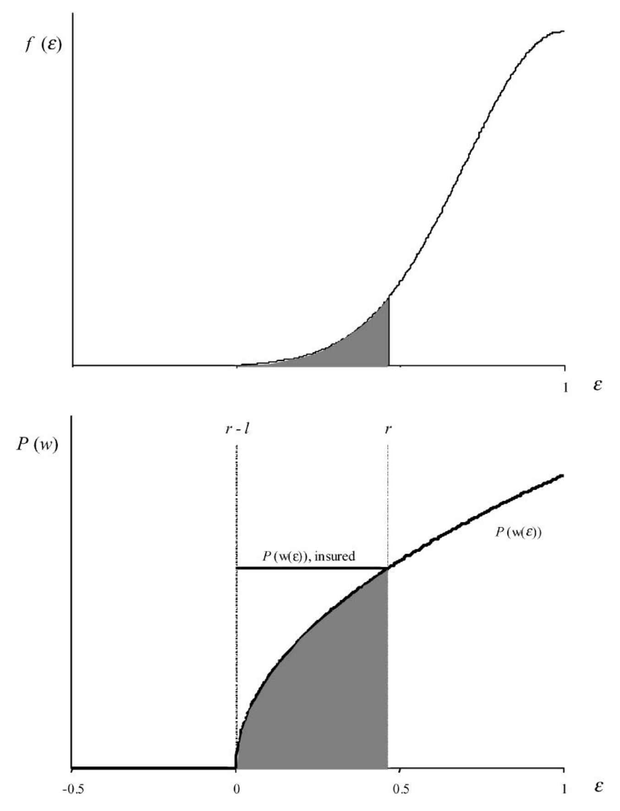
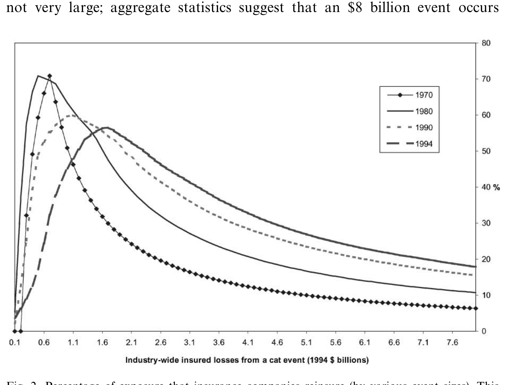
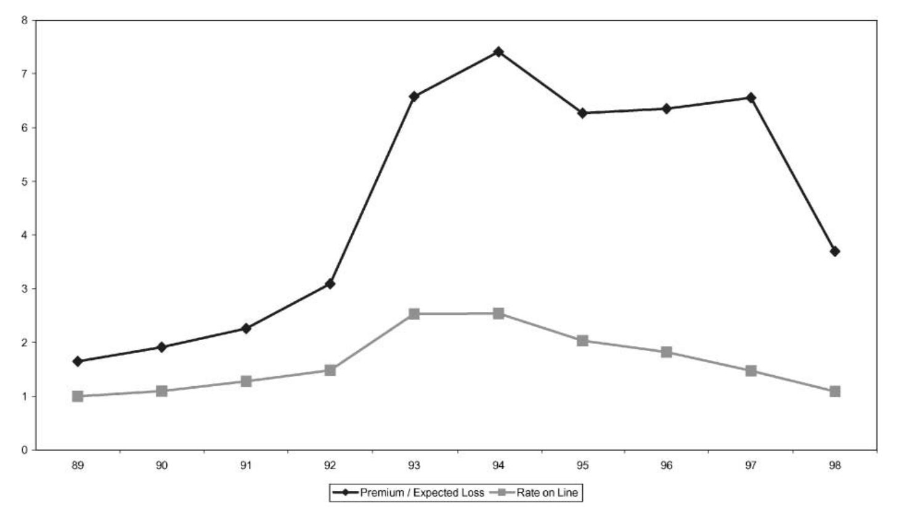
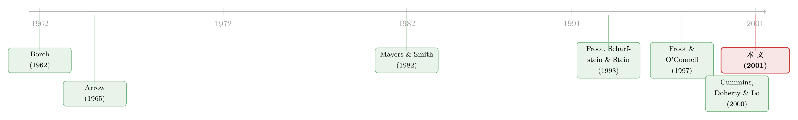

理论说该先保「大灾」，可没人这么买——一桩巨灾再保险市场的临床解剖
本文读的是 Froot (2001, Journal of Financial Economics)：风险管理理论说，企业最该花钱买保险的是那些「最大、最罕见」的灾难；可现实里，保险公司偏偏对大灾买得最少，而且保费高到期望损失的七倍以上。Froot 用一套独一无二的再保险成交数据把这个反差摆上台面，提出八种解释，最后把账算到了供给端——再保险人面对的资本市场摩擦，以及它们手里的市场势力。
1 一个被理论判了「死刑」的市场
先讲一个直觉。
你是一家保险公司，手里攥着佛罗里达和加州一大堆房子的保单。小风小雨的赔付你扛得住——那不过是从口袋里掏点零钱。可真正让你夜不能寐的，是那种五十年、一百年一遇的飓风或地震：一场就能砸出 $50–$100 亿美元的损失，足以把整家公司掀翻。
按照现代风险管理理论，答案再清楚不过：你应该把再保险的钱，优先花在对冲这些「灭顶之灾」上。因为对一家会因为缺钱而被迫贱卖资产、放弃好项目的公司来说，损失越大、越集中，边际上越要命——所以最该买的保险，恰恰是针对尾部那一段。
可 Froot 把全行业的成交单翻出来一看，现实是反过来的。
保险公司对小灾、中灾买了不少再保险，可一旦事件规模往上走，覆盖率断崖式下跌；到了 $80 亿美元这种「也没多大」的事件，被再保险覆盖的敞口已经不到 30%。更刺眼的是价格：这些再保险的保费，平均是期望损失的七倍以上，而且在样本期里从来没有低于过期望损失。
理论说「先保大灾、且价格应当接近期望损失」;现实说「大灾基本不保、价格高得离谱」。两边几乎处处相反。
于是这篇论文真正要回答的问题就浮出来了：理论为什么会失败？是我们的理论错了，还是这个市场本身坏掉了？ Froot 的做法很特别——他不只跑大样本回归，还像医生一样，挑出 USAA 和加州地震局这两个「病例」做临床检查 (clinical examination)，从一笔笔真实交易的肌理里去找病因。
2 理论怎么说：最该先对冲的，是「无穷大」那一端
要说清楚现实有多反常，得先把理论的「标准答案」算干净。Froot 用的是 Froot, Scharfstein and Stein (1993) 那套经典框架——也是「企业为什么要对冲」这条线上最被反复引用的模型之一（关于这套「公司对冲」的逻辑，可参见《对冲，不是一道选择题，而是一台「内部汇率」机器》）。
2.1 设定
模型只有两期：现在和未来。
未来公司的价值是内部资本 w 的函数 \(P(w)\)。关键假设是 \(P'>0,\ P''<0\)——价值函数是凹的。凹从哪来？来自融资摩擦：外部融资比内部资金贵。所以当公司内部资金充裕时，多一块钱用处一般；当内部资金被一场灾难抽干时，多一块钱能救命（能让你不必贱卖资产、不必放弃好项目）。这条凹性，是整个故事的发动机。
未来的内部资金是 \(w=w_{0}+\varepsilon\)，其中 \(\varepsilon\) 是巨灾带来的随机损失，均值为零，分布为 \(f(\varepsilon)\)，并且其风险率 (hazard rate) \(f(\varepsilon)/(1-F(\varepsilon))\) 在支撑集 \(\varepsilon\in(-\infty,1]\) 上严格递增。为简化，取单位使 \(w_{0}=1\)：没灾时，内部资金就是 1。
公司能买的再保险，是一份超额损失层 (excess-of-loss layer) \([r-l,\,r]\)。这里 \(r\) 是自留额 (retention)，也就是免赔额；\(l\) 是限额 (limit)。用期权的语言说，一层再保险其实就是写在公司自身灾损上的一个牛市价差 (call spread)：在执行点 \(r\)（自留额/触发点）上做多一份看涨，在 \(r\) 之上的耗尽点上做空一份看涨。
2.2 核心方程
公司在第一期挑选再保险，目标是在保费预算 \(B\) 的约束下，最大化未来价值的期望：
其中下一期的财富写作（公平定价下，财富 = 灾损 − 公平保费 + 再保险赔付）：
$$ w(\varepsilon)=\varepsilon-\left[\int_{r-l}^{r}(r-\varepsilon)\,dF(\varepsilon)+\int_{-\infty}^{r-l} l\,dF(\varepsilon)\right]+\Big[(r-\varepsilon)\,\mathbb{1}(r-l\le\varepsilon\le r)+l\,\mathbb{1}(\varepsilon\le r-l)\Big] $$
如果没有预算约束，公司会怎么买？它会把 \([r-l,\,r]\) 一直拉到 \((-\infty,\,1]\)——也就是限额 \(l\) 取无穷大、自留额 \(r\) 设在零损失处，把灾难冲击完全对冲掉。预算约束只有在 \(B\) 严格小于「完全对冲所需保费」时才真正咬人：
$$ B<\int_{-\infty}^{1}(1-\varepsilon)\,dF(\varepsilon) $$
2.3 关键一步：为什么先保「最大」的那一端
真正漂亮的推导在这里。对 \(r\) 和 \(l\) 分别求一阶条件、再相互合并，可以得到（论文式 (6)）：
$$ \int_{-\infty}^{r-l} P_{w}\big(w(r-l)\big)\,dF(\varepsilon)=\int_{-\infty}^{r-l} P_{w}\big(w(\varepsilon)\big)\,dF(\varepsilon) $$
这一步为什么成立？因为在被完全保障的区间 \([r-l,\,r]\) 上，\(w\) 是个常数——赔付把这一段的财富「填平」了，于是 \(P_{w}(w(r-l))\) 可以从左边的积分里提出来。
接着是点睛之笔：由 \(P''<0\)，对任何 \(\varepsilon $$
P_{w}\big(w(r-l)\big) 换句话说，越严重的风险，外部资金的边际价值越高，对冲的需求也越强烈。那么要让式 (6) 的等号成立，唯一的办法就是把 \(l\) 推到 \(-\infty\)——也就是说，最优的那一层必须先把无穷大的尾部罩进来。然后，随着预算 \(B\) 被放松，自留额 \(r\) 才一点点往低损失方向移动。 于是有了这篇论文的理论基准： 命题（直觉版）：公平定价下，最优的再保险方案先对冲「无穷大的灾难」，再用宽裕出来的预算去覆盖更高频、损失更小的那一段。最优层是 \([r^{*}-l^{*},\,r^{*}]=(-\infty,\,z]\)，其中 \(z<1\)。 图 1 把这个直觉画了出来：上半幅是事件损失的频率分布，下半幅是公司价值随损失变化的曲线，阴影区就是「公司若能按公平价自由选择对冲区间」时，会优先罩住的那一段——它从最大的损失开始，随着花得起的钱变多，自留额 \(r\) 连续上移。  Figure 1: Optimal constrained hedging program. Shaded region indicates the range of event-loss 记住这张图的形状：覆盖率应当随事件规模上升而上升（至少在尾部不该掉下来）。这是理论给的「该长成的样子」。接下来，我们去看现实长成了什么样。 Froot 这篇的说服力，很大程度来自数据本身。 数据来自 光有合同还不够，难点在于：每份合同保的是单个公司的损失，而理论说的是全行业事件规模。怎么把二者接上？Froot 的办法是用 A.M. Best 提供的各公司、各年、各区域市场份额，把单个公司的自留额和耗尽额「翻译」成全行业损失水平。举个例子：一家全国性公司若占巨灾敏感保费的 价格那一侧也要校准。要算「公平价」，就得知道一个 这里要诚实地交代一个前提：把期望损失当「公平价基准」，依赖两个假设——(1) 巨灾风险在均衡中可分散（其收益与总财富不相关，数据也确实拒绝不了这一点）；(2) 灾难模型给出的期望损失是无偏的。Froot 也承认，巨灾事件数据极其稀缺，期望损失可能被系统性低估。这个让步，后面会变得很关键。 第一刀切下去，是覆盖率随事件规模的变化（图 2）。结论一目了然，也一目惊心：再保险的覆盖率在小事件处最高（扣掉一个很小的初始自留额后），然后随事件规模迅速下滑，到  Figure 2: Percentage of exposure that insurance companies reinsure (by various event sizes). This 引申一步更让人心惊：保险公司本身只中介了一小部分巨灾敞口，家庭和企业部门面对的大量风险根本没有被中介。Doherty and Smith (1993) 就记录过，企业对 图 2 还藏着第二条线索：大灾之后，自留额会往上抬。1990 到 1994 年间，飓风 Andrew（佛州）和 Northridge 地震（加州）分别造成约 第二刀切在价格上（图 3）。Froot 画了两条线：一条是保费/期望损失之比，另一条是再保险行话里的 rate on line（保费/限额），后者完全不含期望损失的估计，因此免疫于「期望损失算错了」的质疑。  Figure 3: Premium/expected loss and rate on line (premium/limit) for reinsurance contracts 几个事实跳出来： 第一，价格远高于公平价。 样本期里，保费是期望损失的七倍以上，且任何时点都不低于期望损失。 第二，价格有一条被大事件触发的周期。 1992 年 8 月飓风 Andrew 之后，再保险价格急剧攀升——光是 1992 到 1993 一年，保费就涨到了期望损失的三倍（每年合约条款在 1 月敲定）。此后 Northridge 地震（1994）之外只发生过相对轻微的损失，到 1998 年，价格从 Andrew–Northridge 后的高位腰斩（按 rate on line 衡量，1994 年起平稳下滑）。 第三个事实尤为有意思，也是 Froot 用来反击「期望损失算错了」这一质疑的杀手锏。你也许会说：是不是我们系统性低估了期望损失，才显得保费虚高？就算如此，这种低估也解释不了价格的周期。 一个理性的贝叶斯学习者，确实可能在一场低概率事件真的发生后大幅上调再发概率；可一场「本就不太可能发生的事件没有发生」，几乎不带来任何新信息——它凭什么让期望损失先暴涨、又在短短几年内陡然回落？换句话说，水平上的偏差或许有，但价格的剧烈起落，不是任何理性的概率估计方案能产生的。 这就把「测量误差」这条退路堵死了。 至此，Froot et al. (1993) 模型在公平定价假设下，被这些事实干净地拒绝了。 理论被拒之后，自然要问：那到底是怎么回事？是逆向选择、信息不对称，还是代理问题？ Froot 一口气提出了八种解释。其中大多数指向供给侧的扭曲，少数指向需求侧。但他通过临床证据（USAA 和加州地震局那几笔用债券资本支持再保险的开创性交易）反复掂量后，认为最有说服力的，是两条供给端的故事： 正是这两条，让 USAA 和加州地震局这样的「大买家」开始绕开传统再保险、转向资本市场，用专门的抵押资本（由债券持有人提供）去支持再保险——也就是后来的巨灾债券。这场创新本身，恰恰暴露了传统再保险市场的不完美。 别误读这篇论文的立场。Froot 并不是说「理论错了」，而是说「在公平定价这个前提下，理论被拒了」。一旦把供给端的资本市场摩擦和市场势力放进来，企业「该买大灾保险却买得少」就不再是非理性——而是面对一个又贵又供给不足的市场时，理性的最优反应。需求侧的曲线没问题，是供给侧把价格顶上了天、把数量压了下去。 把这条线捋一捋，能看清这篇论文站在哪。 最早是保险经济学的源头：Borch (1962) 和 Arrow (1965) 证明了风险厌恶个体的最优保险合同含有免赔额——这是「超额损失层」这种合同形态的理论祖先。  接着，公司金融视角进来了。Mayers and Smith (1982, 1987)、Garven and MacMinn (1993) 论证了在企业（而非个人）层面，保险合同如何缓解投资不足和代理问题。这一支的关键转折，是 Froot, Scharfstein and Stein (1993)：他们指出，对一家面临融资摩擦的价值最大化公司而言，对冲的价值来自「为有利可图的投资保住便宜的内部资金」——而且与风险厌恶个体不同，公平的风险补偿率本身不影响企业的对冲决策。这正是本文模型的骨架。 然后，巨灾这个具体战场被一系列工作打开：Froot and O'Connell (1997) 给出了中介化风险（尤其是巨灾再保险）的定价理论与方法论；Jaffee and Russell (1997) 和 Cummins, Doherty and Lo (2000) 则从「资本市场能否承接巨灾、保险业到底有多大承保能力」的角度切入。 Froot (2001) 站在这条线的交汇点上：它一手拿着 FSS (1993) 的对冲理论作基准，一手用全行业成交数据去检验，发现理论被拒，最后把解释引向供给端的资本市场摩擦与市场势力——这又把故事接回了 Shleifer and Vishny (1997)「有限套利」的大框架。（这个市场后来如何被「打包卖给华尔街」，以及随之而来的基差风险，可参见《蝗灾买不到保险，却可以「打包卖给华尔街」——但你敢买吗？》；关于巨灾保险定价与资本配置的进一步讨论，可参见《蝗灾不算系统性风险，凭什么卖得这么贵？》。） Q：理论说「先保大灾」，可现实是「先保小灾」——这是不是说明 Froot 的模型本身就错了？ 不是。模型的预测在「公平定价 + 没有供给约束」这个前提下是对的；Froot 拒绝的是这个前提，而不是对冲价值的逻辑本身。一旦把再保险人的资本市场摩擦和市场势力放进供给侧，价格被顶高、数量被压低，企业「少保大灾」就成了面对一个坏市场时的理性选择。模型是基准，不是结论。 Q：保费是期望损失的七倍——会不会只是因为期望损失被算低了？ 这是最自然的质疑，Froot 也正面回应了。即便水平上存在系统性低估，它也解释不了价格的周期：Andrew 之后保费一年涨到三倍、几年后又腰斩。一个理性的概率估计方案不会因为「一场小概率事件没发生」就让期望损失陡升又陡降。所以测量误差能动摇「七倍」这个水平，却动摇不了「价格随大事件起落」这个动态事实。 Q：rate on line 和 premium/expected-loss 两条线，为什么要同时画？ 因为它们各有盲区，互为对照。premium/expected-loss 含有期望损失估计，会受测量误差污染，但能反映自留额变化；rate on line（保费/限额）完全不含期望损失，免疫于测量误差，但看不出自留额的移动。两条线在 1994–1997 的背离（rate on line 下滑而 premium/expected-loss 不动），正好揭示了那几年自留额在持续上抬。 Q：「临床检查」这个词到底意味着什么？和大样本实证有何不同？ 大样本告诉你「平均而言市场长什么样」，但说不清机制；临床检查像医生看病例，把 USAA、加州地震局这几笔具体交易的来龙去脉拆开看，从合同设计、定价、为什么转向债券市场这些细节里，读出大样本回归看不见的摩擦与低效。两者是互补的：一个定性事实，一个找病因。 Q：巨灾风险与总财富不相关，按理保费就该接近期望损失——可它没有。这对资产定价意味着什么？ 这正是论文最耐人寻味的地方。在完美市场里，可分散风险的价格应当等于期望损失；现实里却收了七倍。这说明定价偏离不一定来自风险本身的系统性，而可能来自承接风险的中介（再保险人）的资本约束与市场势力。它提醒我们：很多「风险溢价」其实是「中介溢价」，是供给侧摩擦的影子。 Q：那企业到底该不该买大灾再保险？ 论文不是劝企业去硬买。它说的是：理论上对冲尾部最有价值，但现实供给太贵太少，所以企业的次优反应是留存大灾风险、或转向资本市场寻找新的承保能力。真正的政策含义在供给端——如何降低再保险人补充资本的成本、削弱其市场势力，而不是责怪企业「对冲得不够」。 1. 把「中介资本约束 → 价格」搬到公司债的危机时刻 【经济故事】Froot 把再保险定价的反常归因于承接风险的中介缺资本。公司债市场在压力期也有同构现象：做市商/交易商资本一紧，价差与流动性溢价就飙升。能否用同一套「供给侧资本摩擦」逻辑，把巨灾再保险的「七倍之谜」和公司债的「流动性危机」放进同一个框架对照？
【可行性】中。TRACE 成交数据、交易商持仓与资本指标都可得；难点在于干净地度量中介资本冲击并与价格分离。识别上可借助监管资本变动或交易商层面的冲击作为外生变化。 2. 巨灾债券的出现，是否真的压低了再保险的「市场势力溢价」？ 【经济故事】USAA 和加州地震局转向债券市场，正是为了绕开传统再保险人的市场势力。一个自然的检验是：在巨灾债券（cat bond）兴起后，传统再保险的 premium/expected-loss 是否在那些更容易被证券化的险种/区域上下降得更多？
【可行性】高。巨灾债券发行数据（Offering Circulars）与 Guy Carpenter 式的再保险定价数据可拼接；用「险种是否易证券化」做横截面差异，构造一个准双重差分。诚实地说，样本量与早期 cat bond 稀少是约束。 3. 外资资本进入，能不能软化巨灾再保险的供给约束？ 【经济故事】如果价格高企源于本地再保险人的资本稀缺与市场势力，那么外部（包括跨境）资本的进入应当增加承保能力、压低溢价。这与「外资持有人是否改善了本地市场流动性/定价」的大问题相通。
【可行性】中。需要跨国再保险资本流动与各区域再保险定价数据；识别上可利用某些司法辖区对再保险资本准入的放开作为外生冲击。数据可得性是主要瓶颈。 4. 把「价格周期」做成可检验的中介杠杆模型 【经济故事】Andrew 后保费三倍、几年后腰斩——这条周期若真由再保险人股本的侵蚀与缓慢回补驱动，就应当能用再保险人的资产负债表（股本、杠杆）来预测价格的起落。
【可行性】高。再保险公司的财报数据可得；可构造「大灾冲击 → 股本下降 → 价格上升 → 资本回补 → 价格回落」的事件研究，检验杠杆是否领先于价格周期。 5. 需求侧到底死在哪一环：是不买，还是买不起？ 【经济故事】Froot 把账主要算在供给端，但「八种解释」里也有需求侧的影子。能否用企业层面的对冲数据，把「面对高价主动少买」与「想买但被供给配给挡住」区分开？
【可行性】中偏低。需要企业层面对冲意向与实际成交的配对数据，这类数据极难获得；可考虑用问卷或特定行业（如能源、地产）的细颗粒度合同数据做小样本临床式研究。 贡献。 这篇论文最大的价值，不在于「发现了一个异象」，而在于它把一个理论与现实的尖锐反差摆得无可辩驳，然后用临床方法逼问病因，最后给出一个克制而有力的答案：问题在供给端，在中介的资本约束与市场势力。它给后来整个「中介资产定价」的研究埋下了一颗种子——很多看似是「风险溢价」的东西，其实是「谁来承接风险、它有没有资本」的影子。把 rate on line 与 premium/expected-loss 并置、用价格周期反驳测量误差，这些手法干净利落，至今仍值得学习。 对识别的担忧。 我有三点保留。其一，把单个公司损失「翻译」成全行业损失，依赖市场份额这把尺子，份额本身随时间变化、且与公司的风险选择内生相关，这可能给覆盖率曲线带来偏差。其二，期望损失来自灾难模型的蒙特卡洛模拟，论文自己也承认可能系统性低估——「七倍」这个水平的稳健性，终究系于此（虽然价格周期那条论证很大程度上绕开了这个问题）。其三，「八种解释里供给端最可信」这个判断，更多来自临床推理而非可证伪的统计检验；它有说服力，但不是一个被数据正式拒绝其他七种的结论。 后续想看到什么。 我最想看到的，是把这套逻辑接到今天的数据上：巨灾债券与「保险连接证券」二十多年的发展，是否真的压低了那个「市场势力溢价」？以及，能否用再保险人的资产负债表，把价格周期做成一个领先指标式的、可证伪的中介杠杆模型？如果能，那么 Froot 在 2001 年用「临床」二字埋下的直觉，就能升级成一个有结构、可检验的定价理论。3 识别策略与数据：把 4000 份合同接到「全行业损失」上
Guy Carpenter & Company——Marsh McLennan 旗下的再保险经纪子公司，也是全美最大的巨灾风险中介。样本覆盖 1970–1998 年、超过 4,000 个巨灾再保险层，涉及 22 家全国性保险公司和一大批区域性公司，全部由 Guy Carpenter 经手撮合。10% 市场份额，就被认为承担全行业损失的 10%；那么它一份「$1.5 亿自留额之上、限额 $1 亿」的再保险层，就对应着保护全行业 $15–$25 亿区间的损失。$x 亿美元的全行业事件以多大概率发生。Froot 分险种（地震、飓风、冬季风暴等）、分五个美国区域、分四个季度，分别估计事件的频率和严重度分布，再用蒙特卡洛模拟，给每一份合同算出期望损失。4 现实长成了什么样：两张图，处处与理论相反
4.1 覆盖率：不升反降
$80 亿美元的事件已跌到不足 30%。$80 亿在今天根本算不上「巨灾」——按 Froot 的估计，这种规模的事件每年发生的概率约 9%。也就是说，真正的大尾巴，历史上几乎没被覆盖过。而且图 2 还高估了覆盖率：因为只有真正买了再保险的公司才进了样本，那些压根不买的被排除在分母之外。$1,000 万到 $5 亿之间的巨灾损失投保有限，而对 $5 亿以上的损失几乎完全不保。经济中绝大多数原生巨灾风险，被留存了下来，而不是被分担出去。$200 亿和 $130 亿的全行业损失；此后，中等事件（$20–$80 亿）的覆盖率上升，而小事件（$20 亿以下）的覆盖率反而下降。看上去，大灾之后大家想多保大事件，可这部分增量，竟是以牺牲小事件覆盖为代价换来的。4.2 价格：七倍，而且是一条会「发作」的周期
5 反转：病因在供给端
6 文献脉络
7 评论与延伸（Q&A + 研究方向）
(a) 几个可能的疑问
(b) 几个可能的研究问题与提案
8 我的判断与参考文献
参考文献